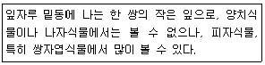
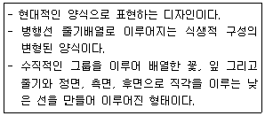
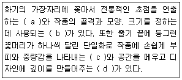
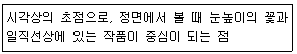
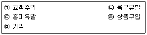
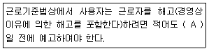

화훼장식기사 (2016-08-21 기출문제)
1과목: 화훼재료 및 형태학
1. 꽃 향기에 대한 설명으로 틀린 것은?
- 정유는 유성을 갖는 액체로서 쉽게 기화 하는 방향성 액체이다.
- 정유는 선모와 유선 등에 작은 방울로 존재한다.
- 향의 3여신에 속하는 정유는 자스민, 장미오렌지이다.
- 제자리움의 정유의 주요 채집부위는 꽃이다.
(정답률: 77%)

2. 봄철에 국화의 꽃눈을 형성시켜 개화를 촉진할 때 사용하는 것은?
- 고랭지재배
- 억제재배
- 전조재배
- 차광재배
(정답률: 84%)
3. 화색발현 색소에 대한 설명으로 틀린 것은?
- 베타레인류는 선인장에만 있다.
- 펄라르고니딘은 홍정색을 나타낸다.
- 황색은 주로 카로티노이드에 의해 발현된다.
- 청색을 나타내는 꽃은 모두 리코펜(lycopene)에 의해 발현되는 것이다.
(정답률: 78%)
4. 국화과 식물의 두 상화서에서 가장 자리에 방사성으로 붙은 소화를 무엇이라 하는가?
- 설상화
- 통상화
- 관상화
- 두상화
(정답률: 50%)
5. 다음 보기의 설명은?

- 탁엽(stipule)
- 엽신(leaf blade)
- 엽병(petiole)
- 털(hair)
(정답률: 73%)
6. 다음 중 총상화서가 아닌 것은?
- 루피너스
- 글라디올러스
- 나리
- 심비디움
(정답률: 59%)
7. 난과 식물을 동양란과 서양란으로 구분할 때 동양란에 속하는 것은?
- 풍란
- 호접란
- 카틀레아
- 덴드로비움
(정답률: 94%)
8. 누름 꽃으로 이용하기 가장 용이한 형태의 꽃은?
- 꽆잎이 크고 주름이 많은 꽃
- 구조가 간단하고 꽃잎이 적은 꽃
- 꽃잎이 나팔 모양인 꽃
- 꽃잎이 두텁고 수분 함량이 많은 꽃
(정답률: 89%)
9. 잎의 모양에 대한 용어로만 나열된 것이 아닌 것은?
- 원형, 종형
- 주걱형, 심장형
- 화살형, 선형
- 난형, 심장형
(정답률: 67%)
10. 옆맥이 평행맥(parallel vein)인 것으로만 나열된 것은?
- 산세베리아, 수국
- 옥잠화, 드라세나
- 필레아, 왕벚나무
- 비비추, 피토니아
(정답률: 75%)
11. 생리적 또는 유전적 요인에 의해서 변형 되었지만 관상가치를 상실하였다고 볼 수 없는 것은?
- 카네이션의 언청이(calyx splitting)
- 국화의 관생화(proliferation)
- 장미의 꽃목굽음(bent nect)
- 부겐빌레아의 포엽(bract leaf)
(정답률: 82%)
12. 원예용 배지 중에서 광물성인 것은?
- 바크(bark)
- 코이어(coir)
- 피트모스(peatmoss)
- 펄라이트(perlite)
(정답률: 78%)
13. 다음 중 휘발성 물질인 포름알데히드의 제거 효과가 가장 높은 식물은?
- 드라세나
- 맥문동
- 벤자민고무나무
- 네프로레피스
(정답률: 58%)
14. 벼과 식물에 대한 설명 중 옳지 않은 것은?
- 화서의 기본구조는 작은 이삭(小穗)으로 구성되어 있다.
- 주로 수상화서(spike)로 되어 있다.
- 꽃은 1개의 외영과 내영 1개의 암술과 3개의 수술로 되어 있다.
- 벼과 화훼류는 맥문동이 있다.
(정답률: 71%)
15. 절화용으로 이용되는 카네이션의 학명으로 옳은 것은?
- Dianthus caryophyllus L.
- Dianthus barbatus L.
- Dianthus sinensis L.
- Dianthus superbus L.
(정답률: 75%)
16. 공중걸이용으로 가장 어울리지 않는 식물은?
- 틸란드시아
- 네펜테스
- 골든 크레스트
- 스킨답서스
(정답률: 73%)
17. 투명한 용기 안에 흙을 넣고 식물을 심어 꾸미는 작은 정원을 의미하는 것은?
- 테라디움(Terrarium)
- 행잉바스켓(hanging basket)
- 포푸리(potpourri)
- 디쉬가든(dish garden)
(정답률: 85%)
18. 광장의 중심부나 동선의 교차점에 알맞은 화단은?
- 경재화단
- 기식화단
- 리본화단
- 침상화단
(정답률: 79%)
19. 미나ㅣ아재비과에 해당하는 식물이 아닌 것은?
- 개나리
- 매발톱꽃
- 아네모네
- 복수초
(정답률: 58%)
20. 다음의 화훼식물 중에서 줄기에 부착된 잎의 배열이 돌려나기, 즉 윤생엽인 것은?
- 둥굴레
- 회양목
- 드라세나
- 서양담쟁이
(정답률: 63%)
2과목: 화훼품질유지 및 관리론
21. 수분요구도가 큰 식물로 관수량을 높여야 하는 식물로만 이루어진 것은?
- 수국, 포인세티아, 아디안텀
- 알로카시아, 칼란코에, 흑송
- 금송, 오엽송, 아나나스
- 매리골드, 채송화, 틸란드시아
(정답률: 96%)
22. 다음 중 에틸렌에 대한 민감도가 가장 낮은 관하식물은?
- 후크시아
- 하와이무궁화
- 국화
- 캄팔눌라
(정답률: 86%)
23. 절화보존제의 일반적인 구성성분이 아닌 것은?
- 아브시스산
- 에틸렌발생억제제
- 산도조절제
- 당
(정답률: 88%)
24. 절화의 물올림을 좋게 하기 위한 처리가 아닌 것은?
- 수중절단
- 당 공급
- 열탕처리
- 탄화처리
(정답률: 85%)
25. 에틸렌에 대한 설명으로 틀린 것은?
- 무취, 무색의 기체로 노화 호르몬이다.
- 양란과 같이 에틸렌에 민감한 꽃은 적은 양에 노출되어도 노화된다.
- 에틸렌에 대한 민감도는 고온에서 감소되기 때문에 운송 시 고온에 두는 것이 좋다.
- 에틸렌에 의한 피해를 최소화하기 위해 꽃은 가급적 가스누출, 연기 성숙한 과일과 멀리 한다.
(정답률: 94%)
26. 휴면기를 필요로 하는 분화식물이 아닌 것은?
- 수국
- 동백나무
- 드세나
- 아잘 레아
(정답률: 65%)
27. 다음 중 단일식물이 아닌 것은?
- 국화
- 포인세티아
- 나팔꽃
- 페튜니아
(정답률: 65%)
28. 암발아 종자가 아닌 것은?
- 맨드라미
- 백일홍
- 색비름
- 물망초
(정답률: 59%)
29. 분화류의 ㅂ수송에 대한 설명으로 틀린 것은?
- 튤립, 히아신스 등의 구근류는 꽃봉오리색이 나타나기 시작하면 수송한다.
- 암상태로 장거리 수송 시 광부족에 의한 잎의 황변 발생률이 높다.
- 수소 24시간 전 충분히 관수한 후 과도한 물은 배수해 주어야 한다.
- 사과, 참외 등과 함께 수송하면 에틸렌 상쇄작용으로 유리하다.
(정답률: 88%)
30. 화훼재배 시 관수방법에 대한 설명으로 틀린 것은?
- 다공 파이프 관수-내구성이 매우 강하고 동시에 대면적을 효과적으로 관수할 수 있어 대면적을 생력관리하는 데 가장 적합하다.
- 다공 튜브 관수-폴리에틸렌으로 된 호스에 구멍을 뚫어 직접 관수하는 방법이다.
- 스프링클러 관수-시간당 관수량이 많아서 빠른 시간 내에 관수할 수 있으나 살수된 물이 잎과 줄기에 직접 닿게 되어 병발생이 조장된다.
- 점적 관수-과습해지기 쉬운 공기습도를 조절할 수 있고 단시간 내에 관수할 수 있다.
(정답률: 70%)
31. 절화의 생리적 특성에 대한 설명으로 틀린 것은?
- 아스리움, 헬리코니아 등 열대 원산 절화는 8~15℃에 저장해야 한다.
- 카네이션 절화는 실온에서 에틸렌 가스에 접촉되면 수명이 급속히 짧아진다.
- 절화는 뿌리 없이 줄기로 양분, 수분을 흡수 라므로 절취하지 않은 꽃보다 더디게 노화된다.
- 글라디올러스, 금어초, 스토크, 델피니움과 같은 절화를 눕혀 놓으면 꽃이 달린 쪽이 위를 향하게 된다.
(정답률: 79%)
32. 분화식물의 관리에 대한 설명으로 틀린 것은?
- 식물의 잎 표면에 묻은 먼지는 광합성에 이용될 광선을 차단한다.
- 식물광택제 대용으로 우유나 미네랄오일을 상용하기도 한다.
- 장기간 광택제를 사용하면 잎 표면에 광택제가 쌓여 식물생장에 지장을 주기도 한다.
- 증산억제제는 잎 표면에 피막을 형성하여 증산량을 줄이고 위조를 촉지하여 뿌리 활착에 도움을 준다.
(정답률: 74%)
33. 분화류의 외적 품질에 대한 설명으로 옳은 것은?
- 꽃이나 줄기에 기계적인 상처나 병충해가 없는 것
- 출하 직전에 단근하여 화분에 올린 것
- 출하 전에 수 주간 저온에서 관리한 것
- 화분흙에 비료가 전혀 없도록 한 것
(정답률: 85%)
34. 절화의 종류별로 일반적인 에틸렌 피해증상을 바르게 나타낸 것은?
- 금어초:꽃잎 말림
- 글로리오사;소화 탈리
- 스위트피:꽃잎 탈리
- 튤립:봉오리의 기형
(정답률: 89%)
35. 분화의 양분 결핍증 발생 시 식물의 생육을 빠르게 증진시킬 목적으로 사용하는 시비방법은?
- 양액재배
- 완효성비료 사용
- 관비재배
- 엽면시비
(정답률: 80%)
36. 분화류 관수방법 중 저면관수법이 아닌 것은?
- 심지관수
- 매트관수
- 담배수관수
- 점적관수
(정답률: 74%)
37. 절화보존제의 성분과 그 역할이 올바르게 짝지어진 것은?
- 식물생장조절물질-미생물 발생 억제
- 살균제-화색발현 촉진
- 에틸렌발생억제제-줄기 경도 증가
- 당-호흡기질의 공급
(정답률: 57%)
38. 에틸렌의 작용과 관계가 먼 것은?
- 봉오리의 고사
- 꽃의 탈리
- 꽃의 위조
- 세포의 신장 촉진
(정답률: 85%)
39. 절화의 상품가치를 높이기 위한 수확시기가 적절하지 못한 것은?
- 거베라-4/5 정도 개화했을 때
- 스탠다드 국화-꽃봉오리가 1/3 정도 개화 했을 때
- 금어초-전체 소화 중 1/3 정도 개화 했을 때
- 백색칼라-꽃봉오리가 1/3 정도 개화 했을 때
(정답률: 67%)
40. 나리, 알스트로메리아와 같은 절화 잎의 황화를 방지하기 위하여 사용하는 생장조절물질은?
- Gibberellin(GA)
- Abscisis acid(ABA)
- Amino oxyacetic acid(AOA)
- B-9
(정답률: 79%)
3과목: 화훼장식학
41. 절화작업 시 철사에 대한 설명으로 틀린 것은?
- 꽃의 줄기 대용으로 사용되기도 한다.
- 철사의 굵기는 홀수 숫자로 표현되며 숫자가 높아질수록 굵어진다.
- 장식물의 뼈대나 고정용으로 이용된다.
- 번호가 부여되는 다양한 색상의 철사류가 있는데 이는 장식용이나 고정용등으로 이용된다.
(정답률: 85%)
42. 플로랄 폼에 철망을 씌워 사용하는 이유로 가장 적합한 것은?
- 물의 흡수를 좋게 하기 위하여
- 굵거나 긴 소재를 지탱하기 위하여
- 플로랄 폼을 재사용하기 위하여
- 플로랄 폼을 커버링할 때 용이하도록 하기 위하여
(정답률: 94%)
43. 선과 각도가 명확하게 표현되는 구성으로 비대칭적인 균형을 지니고 선들은 수직, 수평이나 곡선으로 이루게 표현되는 양식은?
- 포멀리니어
- 파라렐시스템
- 뉴 컨벤션
- 랜스케이프
(정답률: 79%)
44. 절화장식에 대한 설명으로 거리가 먼 것은?
- 꽃을 주 소재로 하여 화려한 색과 섬세한 아름다움을 보인다.
- 실외공간에서 다양한 용도로 이루어지며 장식기간이 지속적이다.
- 절화는 그 상태에 따라 생화나 건조화로 나눌 수 있으며 조화까지 포함할 수 있다.
- 절화장식에는 꽃꽂이, 꽃다발, 리스(wreath), 갈런드(galand), 형상물(figure)등이 있다.
(정답률: 83%)
45. 전통적인 의미로는 일본의 고전적인 꽃꽂이 기술을 의미하였으나 그 의미의 폭이 확대되어 일본의 다양한 화훼장식을 통틀어 일컫는 말은?
- 쿠바리
- 나게레이
- 이케바나
- 도코노마
(정답률: 95%)
46. 다음 중 동양식 꽃꽂이의 설명이 아닌 것은?
- 대개 천(天), 지(地), 인(人)의 3가지 주지를 사용한다.
- 실내장식의 일부로서 인공적인 기교로 시대 환경에 맞게 생활 속에 활용한다.
- 선을 다양화 시키고 강조하며 내면의 아름다움을 표현한다.
- 바로 세우는 형은 1주지의 선이 직선적인 것으로 0°~15° 범위 내에 수직으로 꽃는다.
(정답률: 77%)
47. 화훼장식이 우리에게 주는 교육적 효과로 거리가 먼 것은?
- 창조적 작업은 디자이너들에게 창작 의도와 표현 욕구를 시각적 이미지로 제시한다.
- 사물에 대한 관찰력, 집중력을 높일 수 있다.
- 화훼장식은 생물적 가치에 의존함으로 인해 양육하는 행동을 배울 수 있다.
- 공간장식을 통하여 수학적 능력을 길러준다.
(정답률: 77%)
48. 다음에서 설명하는 것은?

- 뉴 컨벤션 디자인(new convention design)
- 풍경식 디자인(landscape design)
- 미더마이어 디자인(biedermeier design)
- 더치 플레미쉬 디자인(dutch flemish design)
(정답률: 71%)
49. 갈런드(garland)에 대한 일반적인 설명으로 틀린 것은?
- 고대 이집트나 로마시대부터 축하용으로 사용되었다는 유래를 가진다.
- 둥근 기둥의 둘레장식, 테이블 가장자리의 장식, 계단의 난간을 따라 장식하고자 할 경우 갈런드가 이용된다.
- 외부 장식을 위하여 갈런드에 사용되는 소재들은 손상을 방지하기 위해 단단한 소재를 주로 이용한다.
- 녹색의 침엽이나 상록수의 잎, 솔방울이나 과일, 견과류를 함께 묶어 사용한 갈런드로 성탄절이나 새해에 장식하기도 한다.
(정답률: 71%)
50. 절화장식에 사용하는 용기 중 일반적으로 굽이 달린(혹은 굽이 높은)용기를 말하며 굽을 달아놓은 듯한 형태뿐만이 아니라 재미있고 다양한 형태로 나오기도 하는 것은?
- 콤포트(compote)
- 항아리(jar)
- 수반(basin)
- 바구니(basket)
(정답률: 73%)
51. 신년 꽃꽂이의 소재로 적당하지 않는 것으로만 나열된 것은?
- 소나무, 대나무
- 고목, 국화
- 조팝나무, 리아트리스
- 향나무, 백합
(정답률: 67%)
52. 동양꽂꽃이 화형에서 분리형에 대한 설명으로 옳은 것은?
- 한 화기에 주지를 두 그룹에서 나누어 꽂는 형을 말하며 크기와 양의 변화를 주어야 한다.
- 여러 개의 가지나 줄기가 같은 방향으로 평행을 이루도록 꽂는 형을 말한다.
- 한 점의 중심이 되어 사방으로 균일하게 꽂는 기본형이다.
- 완성된 두개 이상의 화형을 합하여 만든 하나의 큰 작품을 말한다.
(정답률: 60%)
53. 수경재배에 대한 설명으로 틀린 것은?
- 흙을 사용하지 않고 물에 뿌리를 넣어 식물의 생장에 필요한 무기 양분을 인위적으로 공급하여 식물을 재배하는 방법을 말한다.
- 수경재배는 물속에 뿌리를 지지할 수 있는 배지를 넣어 화훼식물과 채소의 생산에 많이 이용되는 방법이지만, 실내공간 장식용으로도 이용된다.
- 수경재배한 미나리, 고구마 등의 채소류도 실내공간 장식용으로 이용된다.
- 수경재배에 이용되는 수원은 전기전도도 0.3mS/cm 이하, 칼슘 80ppm이하 마그네슘은 100ppm 이상, 신도는 pH8.5정도가 적합하다.
(정답률: 70%)
54. 다음 설명 중 틀린 것은?
- 수경재배는 흙을 사용하지 않고 뿌리를 물에 넣어 식물의 생장에 필요한 무기 양분을 인위적으로 공급하여 식물을 재배하는 방법이다.
- 착색식물은 습도가 낮고 따뜻하며 약간 어두운 장소에서 잘 자란다.
- 비바리움(vivarium)은 유리 용기 속에 도마뱀, 이구아나, 개구리 등의 동물과 여러 식물이 어우렂져 공생하고 있는 자연의 모습을 연출한 것이다.
- 테라리움(terrarium)에 사용되는 식물은 습기에 잘 견디고 생장 속도가 느린 작은 식물이 적당하다.
(정답률: 71%)
55. 매몰건조에 대한 설명으로 틀린 것은?
- 가는 입자로 된 재료를 이용하여 식물소재를 매몰시켜 건조시키는 방법이다.
- 건조과정에서 꽃의 변형을 최소화시키고 빠른 탈수를 유도함으로써 소재의 아름다운 색깔과 모양을 비교적 잘 유지할 수 있는 장점이 있다.
- 매몰건조방법은 주로 압화소재를 건조시키는 데 이용된다.
- 건조재료로 이용되는 것은 실리카겔, 강모래, 소금, 봉사, 밀가루 등이 있으며, 실리카겔이 가장 널리 이용된다.
(정답률: 74%)
56. 고려시대의 절화양식을 엿볼 수 있는 작품에 해당하지 않는 것은?
- 수덕사 대웅전의 수화도와 야화도
- 강서대묘 비천상의 산화도
- 수월관음도
- 해인사 대적광전의 벽화
(정답률: 52%)
57. 분석물 장식에 사용되는 도구와 기능을 바르게 연결한 것은?
- 가위-오브제를 제작
- 괭이-흙 운반
- 호스- 습도유지 및 엽면시비
- 드릴-볼트박기 혹은 빼기
(정답률: 70%)
58. 절화장식물을 이용한 연회장 연출을 기획할 때 옳은 순서는?
- 주제결정→구상→도면 및 서류작성→연습→소재구입과 준비→제작과 포장→평가
- 주제결정→구상→연습→소재구입→도면 및 서류작성→제작과 포장→평가
- 주제결정→공간의 특성 분석→구상→연습→도면 및 서류작성→제작과 포장→평가
- 주제결정→공간의 특성 분석→구상→도면 및 서류작성→연습→소재구입→제작과 포장→평가
(정답률: 78%)
59. 글리세린 흡수 후 건조가공 기술에 대한 설명으로 틀린 것은?
- 건조 전 글리세린용액을 흡수시킨 후 건조한 잎은 건조 후에도 유연성을 가진다.
- 잎에 글리세린 처리를 위한 용액은 물과 1:2 또는 1:3으로 혼합된다.
- 글리세린 처리 시 물의 표면장력을 줄이기 위해 이용하는 습윤제는 Tween-0 등이 이용된다.
- 물의 표면장력을 줄여 용액의 흡수가 용이하도록 Tween 20을 10~20% 농도로 글리세린 용액에 혼합하여 사용한다.
(정답률: 65%)
60. 건조화의 주요 표백방법에 해당하지 않는 것은?
- 하이포아염소산염을 이용한 표백
- 아염소산나트륨을 이용한 표백
- 과산화수소를 이용한 표백
- 수산화나트륨을 이용한 표백
(정답률: 64%)
4과목: 화훼장식 디자인 및 제작론
61. 같은 색이라도 넓게 사용되면 더 선명하고 밝아져 강한 인상을 주며, 좁게 사용되면 더 어두워 보이는 대비는?
- 계시대비
- 연변대비
- 동화효과
- 면적대비
(정답률: 90%)
62. 다음 중 디자인 요소가 아닌 것은?
- 질감
- 형태
- 색채
- 구성
(정답률: 73%)
63. 화훼장식기법 중 콜라주(collage)기법에 관한 설명으로 틀린 것은?
- 풀로 붙인다는 뜻을 가진 근대미술의 특수한 기법 중 하나이다.
- 화훼재료 이외에 다양한 재료를 혼합하여 사용할 수 없다.
- 2차원적인 회화적 요소에 3차원적인 식물 재료를 혼합 구성하는 방법이다.
- 생화와 건조화도 모두 사용할 수 있다.
(정답률: 75%)
64. 다음은 꽃의 형태에 따른 분류에 대한 설명이다. 빈칸에 알맞은 용어는?

- a:라인플라워, b:폼플라워, c:필러플라워, d:매스플라워
- a:폼플라워, b:매스플라워, c:라인플라워, d:필러플라워
- a:필러플라워, b:라인플라워, c:폼플라워, d:매스플라워
- a:폼플라워, b:라인플라워, c:매스플라워, d:필러플라워
(정답률: 83%)
65. 디자인 요소 중 점의 특성에 대한 설명으로 틀린 것은?
- 점의 특성 중 심리적으로 분산 또는 집중시키는 효과가 있다.
- 점은 이동적인 방향감과 원근감을 나타낸다.
- 점은 길이, 폭, 깊이가 있는 추상적인 개념이다.
- 점은 크기에 따라 무게, 형태, 선 등을 느끼게 한다.
(정답률: 72%)
66. 미국의 화가이며 색채연구가에 의한 창안되었고, 수정되어 오늘날 우리나라에서도 한국산업표준(KS A0062)에서 채택하고 있으며 현재 ISO 국제 표준의 색체계는?
- 먼셀 색체계
- 오스트발트 색체계
- NCS 색체계
- 혜링 색체계
(정답률: 90%)
67. 결혼식 행사용 화훼장식이 아닌 것은?
- 단장장식(platform decoration)
- 버진로드(virgin road)
- 십자가장식(cross decoration)
- 아치장식(arch decoration)
(정답률: 88%)
68. 고명도의 보라색 리시안서스와 저명도의 보라색 델피니움을 배색한 것을 어느 배색에 해당하는가?
- 토널(tonal)배색
- 톤인톤(tone on tone)배색
- 톤인톤(tone in tone)배색
- 세파레이션(separation)배색
(정답률: 83%)
69. 테이블 장식에 대한 설명으로 옳은 것은?
- 테이블 장식 용도에 상관없이 풍성하게 장식하도록 한다.
- 평면적이며 획일성 있게 장식한다.
- 화훼 재료의 상징성을 이용하여 테이블의 의미가 성격을 전달한다.
- 쉽게 형태가 변형되거나 꽃 가루가 날리는 꽃을 상용한다.
(정답률: 88%)
70. 다음에서 설명하고 있는 것은?

- 포컬포인트
- 외곽선
- 생장점
- 오브제
(정답률: 78%)
71. 식물의 올바른 물주기에 대한 설명으로 틀린 것은?
- 열대우림의 늪지대가 원산이인 식물은 사막지역이 원산지인 식물보다 물을 자주 주어야 한다.
- 밝고 따뜻한 곳에 있는 식물은 어둡고 서늘한 곳에 있는 식물보다 물을 자주 주어야 한다.
- 토분에 심은 식물은 플라스틱이나 유리, 철제로 된 화분에 심은 식물보다 물을 자주 주어야 한다.
- 비교적 키가 작거나 잎이 많지 않고 다육질의 잎이나 줄기를 가진 식물은 키가 크고 잎이 많은 식물보다 물을 자주 주어야 한다.
(정답률: 75%)
72. 1:8로 축소된 도면상의 작품의 길이가 300mm일 경우 실제 작품의 길이는?
- 240m
- 24m
- 2.4m
- 0.24m
(정답률: 71%)
73. 상업적 공간연출(display)에서 고객 유치 5단계의 순서로 옳은 것은?

- ㉠-㉡-㉤-㉢-㉣
- ㉡-㉢-㉠-㉤-㉣
- ㉢-㉡-㉠-㉣-㉤
- ㉠-㉢-㉡-㉤-㉣
(정답률: 83%)
74. 분식물을 분갈이한 후 관리하는 방법으로 틀린 것은?
- 관엽식물은 분갈이한 후에 바로 수분을 보충해 주어야 뿌리의 활착이 잘 이루어지게 된다.
- 분갈이는 1년 중 가장 생장속도가 좋은 봄에 하는 것이 이상적이다.
- 분갈이를 할 때 화분 선택은 뿌리의 성장 속도보다는 식물의 줄기 생장을 고려하여 선택을 해야 한다.
- 물이 골고루 스며들게 하기 위해서 화분의 약 80% 정도만 토양을 채운다.
(정답률: 75%)
75. 색체 조화에 대한 설명으로 옳지 않은 것은?
- 그리스어로 하르모니아(harmonia)에서 유래 되었다.
- 서로 다른 것들이 대립하면서 통일성을 주는 미적 원리이다.
- 두 개의 대립 색상에 의해서 두 색이 가지는 대비적 조화를 얻는 것이 대비조화이다.
- 일반 사람들이 익숙하지 않은 배색일 때 색채조화를 이룰 수 있다.
(정답률: 86%)
76. 화훼장식물을 이용한 상업용 공간장식에 대한 설명으로 틀린 것은?
- 공간연출은 많은 상품을 판매할 수 있는 방법으로 이용될 수 있다.
- 상품의 전시효과를 극대화시키는 것이 목적이다.
- 상업용 공간장식에는 인조화를 사용할 수 없다.
- 새로운 문화공간으로 조성해 줄 수 있다.
(정답률: 85%)
77. 도면의 종류에 대한 설명으로 틀린 것은?
- 입면도:물체의 외형을 각 면에 대하여 직각으로 투사한 도면으로 보통 동, 서, 남, 북 4면을 나타낸다.
- 평면도:물체를 옆에서 본 모양을 편면으로 그린 도면이다.
- 단면도:물체를 수직으로 절단하여 수평방향에서 본 그림으로 절단 방향에 따라 종단면도와 횡단면도가 있다.
- 정면도:물체를 똑바로 앞에서 본 모양을 그린 도면이다.
(정답률: 95%)
78. 분화식물의 관리에 대한 설명으로 틀린 것은?
- 시든 꽃이나 하엽이 진 잎은 가능한 한 빨리 제거해준다.
- 키가 작은 식물들은 일반적으로 3개월마다 분갈이를 해준다.
- 분갈이는 원래 화분의 크기보다 큰 화분에 분갈이를 하는 것이 바람직하다.
- 잎에 먼지가 많이 앉아 있으면 빛의 흡수량이 적어 광합성에 불량할 수 있으므로 주기적으로 잎 표면의 먼지를 제거해 주어야 한다.
(정답률: 82%)
79. 분식물의 관리를 위한 소매 화원의 환경조건으로 틀린 것은?
- 온도:0~5℃
- 습도:50~60%
- 광도:2000~3000lux
- 일장:12~14시간
(정답률: 72%)
80. 화훼장식 중 식물생장적 디자인(Vegetative Design)에 대한 설명인 것은?
- 꽃이나 식물을 자연의 성격에 최대한 가깝게 표현되는 디자인이다.
- 자연법칙과 일치하지 않는 구성으로서 인위적인 느낌이 들도록 구성하는 디자인이다.
- 일반적인 형태가 아니라 특이한 형태와 움직임을 가지고 있는 식물을 사용하여 형태와 선을 중요하게 인식하는 디자인이다.
- 각각의 고유한 생장점을 가지며 식물소재와 부 소재의 절반이상이 평행으로 배치되는 디자인이다
(정답률: 69%)
5과목: 화훼유통 및 경영론
81. 다음 중 점포의 외부관리 요소와 거리가 먼 것은?
- 조명
- 주차장
- 점포 진열의 창
- 간판의 형태
(정답률: 60%)
82. 화훼 소재의 가산비율을 3:1로 할 때, 도매원가가 13000원인 소재의 소매 단가는?
- 16900원
- 39000원
- 46000원
- 55900원
(정답률: 87%)
83. 백분율분할 가격책정방법으로 현재 판매가가 50000원인 제품의 판매가격을 10%인상하였다고 하면, 순이익은 판매가격의 약 몇 %가 되는가? (단, 현재 가격의 가격책정요소별 백분율은 상품원가 50%, 총이익 50%, 경영비 35%이고, 상품원가나 경영비는 변화가 없다고 한다.)
- 10%
- 15%
- 22.7%
- 34.8%
(정답률: 67%)
84. 플라워 샵의 진열효과와 거리가 가장 먼 것은?
- 계절을 나타내는 상품전시
- 시선이 많이 닿는 곳에 특매품 진열
- 기념일 같은 행사 관련 상품전시
- 포스티 같은 부착물과 함께 전시
(정답률: 78%)
85. 다음 중 (A)에 알맞은 수는?

- 20
- 30
- 45
- 60
(정답률: 78%)
86. 화훼유통과정 중 수집시장의 중간상인에 해당하지 않는 것은?
- 산지 수집상
- 도매상
- 협동조합
- 산지 위탁상
(정답률: 56%)
87. 일반적인 문화식물 관리 요령 중 옳은 것은?
- 온도는 25℃ 이상을 유지한다.
- 광합성을 위해 직사광선이 비치는 곳에 보관한다.
- 관수할 물의 온도는 실온과 같은 온도가 좋다.
- 모든 식물은 1일 한번 정도 관수한다.
(정답률: 77%)
88. 고객의 시각에서 상품 구매동기를 부여할 때 더욱 잘 선택을 할 수 있도록 도와주는 전문 판매원이 갖추어야 할 인격적인 특성으로 가장 적합한 것은?
- 신비성
- 열의
- 감정이입
- 지각열
(정답률: 69%)
89. 꽃가게의 경영방식에 따른 유형에서 서로 소유주가 다른 독립기업이면서도 본점과 동일한 상표의 상품과 상호로 영업을 하고 본점으로부터 상품뿐만 아니라 경영지도까지 받는 대신 로열티를 지불하는 계약형태를 띄는 것은?
- 직영점
- 프랜차이즈 체인점
- 협력점
- 총판점
(정답률: 75%)
90. 절화의 유통경로 중 가장 적합한 과정은?
- 생산자→도매시장→소매장→소비자
- 생산자→소매상→도매시장→소비자
- 도매시장→소매상→생산자→소비자
- 소매상→생산자→도매시장→소비자
(정답률: 94%)
91. 인터넷 쇼핑몰의 운영원칙에 대한 설명으로 틀린 것은?
- 디지털화된 상품의 화보 및 전시가 가능하여야 한다.
- 다양한 상품을 취급하고, 특화된 상품에 치중하는 것은 바람직하지 않다.
- 고객편의 위주의 다양한 주문 및 지불방법을 확보하여야 한다.
- 상품에 대해 상세하고 정확한 정보를 제공하여야 한다.
(정답률: 77%)
92. 프랑스의 경영학자 Henry Fayol은 기업의 여섯 가지 주요 기능 중 하나인 경영 기능에 대해 4가지 주요 경영의 원칙으로 구분하여 설명 하였는데, 이 4가지에 해당하지 않은 것은?
- 계획(Planning)
- 조직(Organizing)
- 보안(Security)
- 통제(Control)
(정답률: 60%)
93. 화훼의 소비적 특성이 아닌 것은?
- 기호품으로서의 소비특성을 갖는다.
- 대중매체에 크게 영향을 받는다.
- 전통적으로 뚜렷한 용도를 가지고 있는 화훼가 있는가 하면, 유행의 변화패턴이 빠른 화훼도 있다.
- 다른 농작물에 비해 1차 산업적 측면이 강하다.
(정답률: 79%)
94. 마케팅 활동 중 촉진활동에 속하지 않은 것은?
- 인적 판매
- 홍보
- 판매촉진
- 가격결정
(정답률: 70%)
95. 화훼 상품의 특성 중 소비적 특성이 아닌 것은?
- 소매점에서 가공률이 높은 상품이다.
- 소요의 계절성과 도시 집중성이 있다.
- 용도에 따른 품목이 뚜렷하다.
- 상품의 유지관리가 필요하다.
(정답률: 60%)
96. 다음 중 광고 목적으로 적당하지 않은 것은?
- 점포의 존재를 알리기 위해
- 고객의 내점율을 높이기 위해
- 구입단가를 절약하기 위해
- 주문에 필요한 정보를 제공하기 위해
(정답률: 80%)
97. 절화의 저온 저장효과와 거리가 먼 것은?
- 호흡량 증가
- 수분 손실 감소
- 미생물 발생 억제
- 잠열 제거
(정답률: 78%)
98. 분화의 품질과 상품성의 평가 요소 중 감각인자로만 나열된 것은?
- 색체, 배색
- 포장, 광고
- 상표, 유행성
- 라벨, 디자인
(정답률: 69%)
99. 화훼류의 품질구성 요소를 외관적 요소, 내적 요소, 사회적 요소로 구분할 때 다음 중 사회적 요소에 속하는 것은?
- 개화정도
- 수송성
- 시장성
- 경제성
(정답률: 69%)
100. 화훼의 채화와 선별 방법에 대한 설명으로 틀린 것은?
- 품목별 출하시기를 감안하여 적기에 채화한다.
- 품위별로 분류한 후 개화 단계 및 초장의 기준에 의하여 선별한다.
- 채화는 에틸렌 발생이 가장 적은 오후(2~4시)에 실시하는 것이 좋다.
- 재화한 것은 신선한 곳에서 물올리기 및 선별작업을 실시한다.
(정답률: 88%)
제자리움의 정유는 꽃에서 추출되는 것이 맞습니다. 꽃에서 추출된 정유는 향기가 강하고 진하며, 향수나 화장품 등에 사용됩니다.